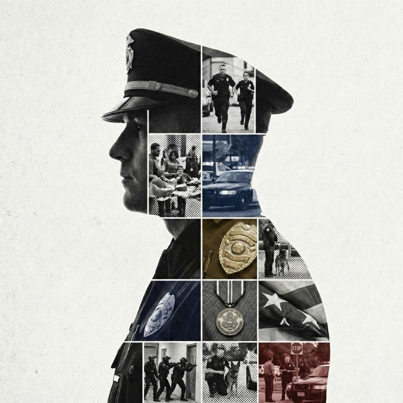
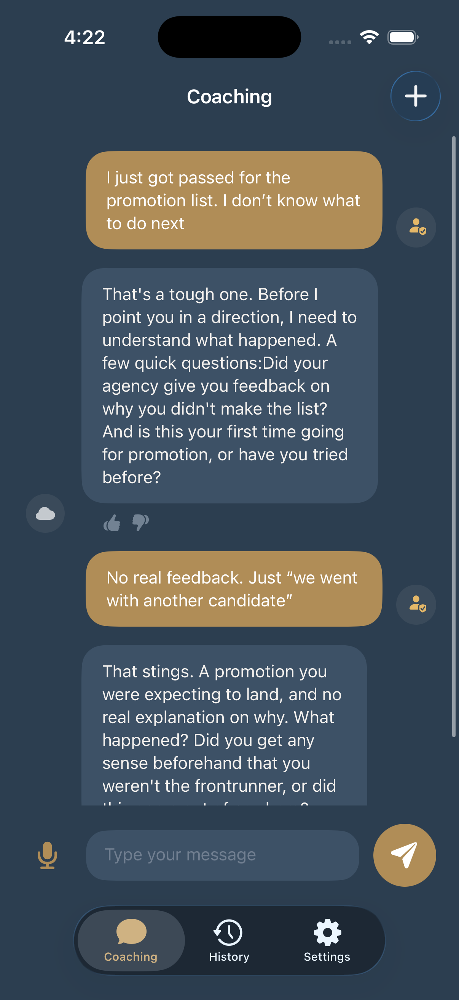

LeaderShift serves public safety professionals across every role. Tell us which best describes you so we can tailor your experience.
Patrol officers, sergeants, lieutenants, captains, and command staff. Career development built for the realities of the badge.
Crime analysts, records supervisors, IT managers, and civilian leadership. Career development built for the professionals who keep agencies running.
A private, rank-aware digital partner for public safety professionals. Built by people who understand the weight of the badge, the decisions that shape careers, and the communities they protect.
A private, role-aware digital partner for public safety professionals. Built by people who understand the organizational complexities, the career decisions that matter, and the mission that drives the work.
Your growth. Your pace. Your device. Encrypted and confidential.
Free to download · $9.99/month · Cancel anytime

No one can see your conversations. No logs of what you said. You are never identified. Delete anytime and it is gone.
A Sergeant leads differently than a Captain. LeaderShift understands that distinction because we built it that way.
A records supervisor faces different challenges than a division director. LeaderShift understands that distinction because we built it that way.
Grounded in the realities of shift work, chain of command, department culture, and the decisions that shape careers. Not generic advice adapted to fit.
Grounded in the realities of agency operations, organizational hierarchy, department culture, and the decisions that shape careers. Not generic advice adapted to fit.
2 A.M. before a critical moment. Sunday night before a Monday promotion board. On your schedule, not office hours.
Founded by Kevin Magnan, a former sworn officer who ran a statewide crime lab, and Eric Lohela, with twenty years in government consulting and partnerships with agencies from Michigan State Police to LAPD. Advised by former senior Department of Justice officials and retired police executives.
A Captain navigates differently than a Sergeant. Organizational dynamics shape every career decision. LeaderShift was built with the cultural fluency to understand both.
A Division Director navigates differently than a new analyst. Organizational dynamics shape every career decision. LeaderShift was built with the cultural fluency to understand both.
Patrol Officer
Deciding whether to go for Sergeant and what the board actually looks for.
Sergeant
Processing "we went another direction" and planning your next move.
Captain
Preparing for press conferences, council meetings, and public accountability moments.
Crime Analyst
Briefing sworn leadership when the stakes are high and the audience speaks a different professional language.
Records Supervisor
Advocating for your team when decision-makers do not fully understand what you do.
Civilian Division Director
Managing across an organization where authority comes from competence, not rank.

Generic advice about "open communication" and "setting clear expectations" with no awareness of rank dynamics, department culture, or chain of command implications.
Generic advice about "open communication" and "setting clear expectations" with no awareness of agency structure, reporting lines, or organizational politics.
Context-aware guidance that considers your rank, your department's culture, chain of command, and the specific professional stakes involved in the situation.
Context-aware guidance that considers your role, your agency's structure, organizational hierarchy, and the specific professional stakes involved in the situation.
We put real public safety scenarios through ChatGPT, Gemini, and other consumer AI tools. They recommended approaches that violated policy, ignored chain of command, and missed the consequences of getting it wrong.
Every response is grounded in rank dynamics, policy constraints, and the professional standards your career depends on. Built by people who lived in your world, not engineers guessing at it.
The Realities Behind the BadgeThe Realities Behind the Role
Rank dynamics, department culture, and the authority you carry require guidance built for the profession.
Organizational dynamics, department culture, and agency expectations require guidance built for your role in public safety.
Showing uncertainty can carry real career consequences. Development requires a space where honest reflection carries no professional risk.
From the patrol car to the corner office, support that scales with your ambition.
From the front desk to the director's office, support that scales with your ambition.
Think through promotion strategy, preparation, and timing, calibrated to your rank and experience.
Work through the tough conversation, the organizational challenge, or the decision no textbook prepared you for.
Communication, conflict resolution, team dynamics, and the self-awareness to keep growing at every rank.
Remembers your goals and career context. The more you use it, the more relevant it becomes.
Three pillars govern every interaction, every design decision, and every boundary we maintain.
Your conversations are never logged and you are never identified. Privacy is not a feature. It is the foundation.
Direct feedback when your approach has blind spots. Honesty without empathy is cruelty. We practice both together.
Industry-specific guidance built for real-world scenarios. Actionable next steps, not abstract wisdom.
Officers who invest in their leadership communicate more effectively, stay resilient under pressure, and make everyone safer.
Professionals who invest in their development communicate more effectively, navigate organizational challenges with confidence, and strengthen the mission.
The more you work the leadership muscle, the sharper your decisions become under pressure.
Supported officersprofessionals stay longer, keeping hard-earned expertise where it is needed.
Leaders who grow build stronger teams and stronger community relationships.
We built this because the people who keep our communities safe deserve a confidential space to think about the decisions that define their careers. No one should have to choose between professional growth and professional exposure.
Questions
Everything you need to know, from privacy to pricing.
Still have questions? Reach out to us.
Available now on the App Store. Professional development built for public safety, on your terms.
Download on theApp StoreFree to download · $9.99/month · Cancel anytime
The LeaderShift Constitution
Every AI system has values, whether its builders name them or not. We chose to name ours. The LeaderShift Constitution governs every interaction, every design decision, and every boundary our platform maintains. Three co-equal pillars. No hierarchy between them. Each one constraining and enabling the others.
Real professional growth requires honest self-reflection. And honest self-reflection requires knowing that what you say stays between you and the tool you are working with. In a profession defined by constant documentation and institutional scrutiny, privacy is not a feature. It is the foundation that makes everything else possible.
You do not need another tool that tells you what you want to hear. You need a tool that tells you what you need to hear, with the care and precision that helps you navigate a complex world. Honesty without empathy is cruelty. Empathy without honesty is cowardice. We practice both together.
Useful means industry-specific and built with guidance and feedback from patrol officers through executive leadership to manage the real-world scenarios you face on the job and when you take the day home.
This era demands digital tools that protect privacy so people can be honest about their real needs. Tools that are useful across the full spectrum of their lives, from the professional challenges they navigate on duty to the personal ones that follow them home.
About LeaderShift
LeaderShift was not born in a startup incubator. It was born from a simple observation: the people we trust to keep our communities safe deserve confidential support for the career decisions that define their professional lives. We set out to build it.
Leadership
Twenty years in government consulting and with a dedicated focus towards public safety since 2019. Eric has worked with dozens of agencies from Michigan State Police to LAPD, and understands the challenge of building technology that actually serves the professionals who use it. He leads LeaderShift's strategic direction, business development, and partnerships.
A former sworn officer with a Master's in data and analytics, Kevin brings deep experience in how to build systems that matter. His work is full of real insight, data-driven approaches to solving problems, and technical precision. He ran a statewide crime lab before designing the AI technology behind LeaderShift, and he built this tool in part because he wished he had had it on the ground with him during some of his most challenging patrol days.
Advisory Team
LeaderShift is guided by a senior advisory team with decades of combined experience across law enforcement, federal justice leadership, academic research, and responsible AI development. Our advisors include former senior Department of Justice officials, retired police executives who have held every role from patrol to deputy chief, and researchers working at the intersection of policing, equity, and institutional reform. Their guidance ensures that every aspect of our product reflects the full spectrum of the profession, including the perspectives of non-sworn staff essential to how modern agencies operate. This is not a board assembled for appearances. It is a working group that pressure-tests our product and holds us accountable to the profession we serve.
The Company
LeaderShift is not affiliated with any department, agency, union, or law enforcement vendor. That independence is deliberate. It means our only obligation is to the public safety professionals who use this tool every day.
We built applications to high standards, with the security architecture and safety considerations to support officers during times of acute need. Aligned with the NIST AI Risk Management Framework and ISO/IEC 23894 guidance on AI risk management. When our platform reaches its limits, we make sure you have access to comprehensive resources outside the scope of what our app can deliver. We built the product first, not the marketing department.
Want to learn more or explore a partnership? Get in touch.
Our Story
The profession asks officers to be crisis negotiators, community liaisons, legal scholars, team managers, media-facing representatives, and tactical operators, often within the same shift. Officers do receive training as they advance. But there is a gap between what formal programs deliver and what officers actually need to navigate the complex organizational realities of their careers.
That gap widens at every step up the chain of command. The higher you go, the fewer people are available to talk to honestly about what the role actually demands.
The work asks staff to be data analysts, compliance experts, technology managers, budget stewards, and cross-functional liaisons, often across multiple divisions. Non-sworn professionals do receive training. But there is a gap between what formal programs deliver and what professionals actually need to navigate complex organizational careers in public safety environments.
That gap widens at every step up the organizational hierarchy. The higher you go, the fewer people are available to talk to honestly about what the role actually demands.
When we tested consumer AI tools with real public safety scenarios, the results were not just unhelpful. They were dangerous. Tools like ChatGPT routinely provided advice that violated policy, ignored chain of command, or missed critical safety considerations.
Officers need timely guidance on complex conversations, space to decompress after a hard shift, and the ability to reorient when switching between professional demands and the rest of their lives. Generic tools were not designed for any of this.
Agency professionals need timely guidance on complex conversations, space to decompress after a demanding week, and the ability to reorient when switching between professional demands and the rest of their lives. Generic tools were not designed for any of this.
The work shift. The hours on duty, the mental transition on the drive home, and the moments between calls when you process what just happened and prepare for what comes next.
The work day. The hours at the agency, the mental transition on the drive home, and the moments between meetings when you process organizational dynamics and prepare for what comes next.
The career shift. Every promotion is a shift in identity, not just a change in title, from executing to leading, from following to shaping the culture of an entire organization.
The cultural shift. Public safety operates in an increasingly complex environment. The profession is evolving, and the leaders navigating that change need tools that help officers and communitiesprofessionals and agencies bridge the gap around trust.
Every officer who navigates a difficult organizational relationship more effectively makes their team stronger. Every leader who prepares thoroughly for a promotion board raises the quality of command. Every professional who develops greater resilience stays in the profession longer, carrying institutional knowledge that cannot be replaced.
Every professional who navigates a difficult organizational relationship more effectively makes their team stronger. Every leader who prepares thoroughly for a leadership opportunity raises the quality of management. Every professional who develops greater resilience stays in the profession longer, carrying institutional knowledge that cannot be replaced.
Leaders who invest in their own growth communicate more effectively and make better decisions, which directly supports the communities they serve.
Try us for a week for free, and decide for yourself.
Download on theApp Store